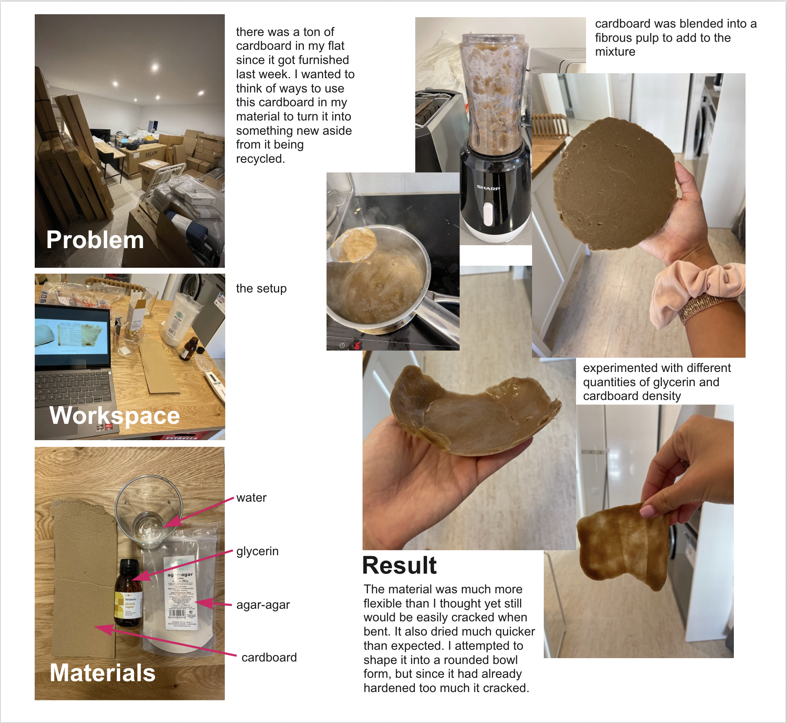

Class
Studio
Date
18 October 2021
Instructors
Oscar Tomico
Research Through Design- Prototyping
This was an exciting week for me as I was looking forward to Biology zero on the schedule. On Monday, we started off with a design studio about research through design and prototyping. It’s interesting to think about researching by designing and how the process goes hand in hand. Research does not need to come first before design, but instead design can be a form of research in itself. I’ve always thought about prototyping meaning one thing, but learning about the different types of prototyping showed me that it can be done and represented in many different ways. I’ve always thought about prototyping as the first role: as an experimental component. Some types of prototyping I have done before, and some I have yet to try. Going through the different types made me realize that prototyping is part of my daily life in small ways as well as having done it through school projects. Since there is overlap in all the types of prototyping, it can be a bit hard to distinguish which type of prototyping category projects might fall into. By thinking about how prototyping can be done in different ways, it showed me any type of experimentation can be prototyping.


My First mdef prototype
For my first prototyping design experiment, I knew I wanted to test out making a biomaterial. Since I had previously only made kombucha leather with the intention of making something for a textile, I wanted to experiment with bioplastics. Some of the mediums we created during the biology zero week contained agar-agar. I am very interested in algae for its material properties so I decided to make a bioplastic using it as a main ingredient. It took me quite a while to gather all of the materials I needed for the experiment, but once I had them all I quickly began experimenting. My apartment has been in the process of being furnished the past couple weeks, so there is tons and tons of cardboard from the boxes. I wanted to think about how it could be used or transformed into something new besides being thrown away or recycled to turn into another paper product. In order to do this, my thought process was to make a composite material. I wanted to try to make shapes with the plastic such as a small bowl. I added the cardboard pieces to a mixer to create a pulp which I squeezed dry and added to the agar-agar glycerin bioplastic mixture. I tried different versions using more or less cardboard or glycerine to see the difference in rigidity and density. The resulting bioplastic was much more gooey than I thought it would be, even the mixture that I didn’t add very much glycerine to. I think having it mold into a shape would be simple except that it would need to be done very quickly after the mixture was prepared as it started solidifying pretty quickly and therefore cracked when I tried to bend and shape it about 45 minutes after I poured it on a surface. The outcome didn’t go exactly as I had supposed it to, but then again I had never experimented making bioplastics and much less adding any other type of material into it. I think the components could have potential to act in the way I was imagining if I found the right ratio of materials and timing. Nevertheless, it was fun prototyping this first mini-project to see what types of materials can be made.
